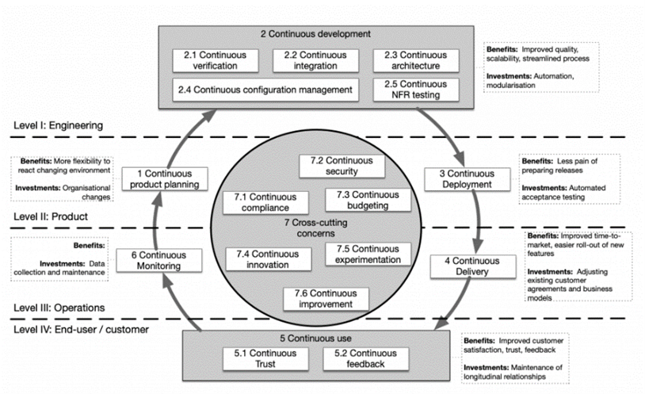

Pidev katsepõhine areng (CTDD) on tarkvaraarendus, mis laiendab katsepõhist arengut (TDD) automaatse katsetäitmise abil taustal, mida mõnikord nimetatakse pidevaks testimiseks
CTDD-s kirjutab arendaja kõigepealt testi, kuid ei ole sunnitud teste käsitsi sooritama. Testid viib automaatselt läbi pidev katsevahend, mis töötab taustal. See tehnika võib vähendada käsitsi katsetäitmisest tulenevat ajaraiskamist, kõrvaldades vajaduse, et arendaja alustaks testi pärast iga tavapärase TDD-praktika etappi
Näide tööriistast: Jenkins, CircleCI
| Head | Vead |
|---|---|
| Tagab pideva kvaliteedikontrolli | Võib suurendada testide kulusi |
| Kiire tagasiside arendus | Automatiseerimine võib protsessi aeglustada, kui pole õigesti seadistatud |